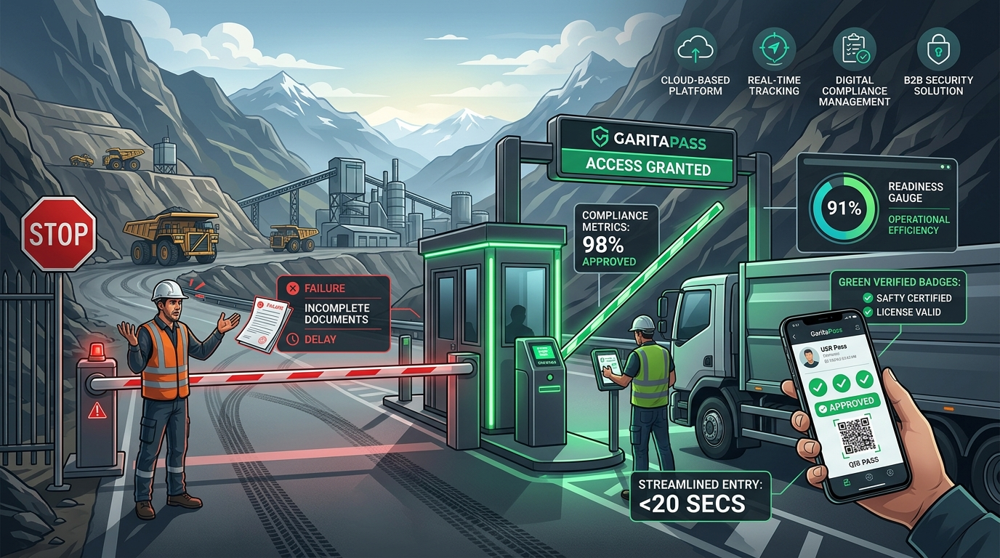

Oficina Digital de Cumplimiento y Habilitaciones Operativas
Garantizamos que empresas contratistas tengan su personal, vehículos y maquinaria 100% habilitados antes de subir a faena, eliminando paradas operativas, multas y rechazos en garita de acceso.
📊 Infografía: El Cuello de Botella Operativo en Faena
Comparativa de Flujo de Trabajo
Información dispersa: RRHH tiene los médicos, Flota los seguros y HSE las capacitaciones en planillas separadas.
Ceguera de requisitos: Creen estar habilitados porque "cumplen en Proyecto A", pero desconocen que Proyecto B exige pólizas especiales y test de altura.
El viaje a ciegas: Se despacha la camioneta y la cuadrilla a 400 km cordillera arriba.
Rebote en Garita: "Póliza expiró hace 48 hs. Chofer y vehículo no ingresan". Pérdida de USD $8.000 a $15.000 por día de parada.
Fuente Única de Verdad: Legajos completos de personal, vehículos y maquinaria consolidados en una sola plataforma.
Matriz Multicontrato Dinámica: El sistema evalúa automáticamente cada recurso contra las exigencias del proyecto de destino.
Alertas Preventivas (30/15/7 días): El motor avisa con anticipación a la persona responsable para renovar antes de caducar.
Pase Inmediato en Garita: Credenciales QR individuales y carpeta digital foliada con firma y hash SHA-256 lista con 1 clic.
⚙️ Los 4 Pilares de la Solución
1. Matriz Multicontrato
Contrasta requisitos específicos de cada operadora (ej. altura geográfica, kits 4x4, ensayos END) evitando asunciones entre contratos.
2. Alertas Tempranas
Semáforo operativo en tiempo real: clasifica brechas críticas, asigna responsables internos y evita caducidades imprevistas de pólizas y ART.
3. OCR Asistido por IA
Lectura inteligente de pólizas, licencias y certificados médicos para autocompletar fechas y números con validación humana en 2 clics.
4. Dossier Foliado & QR
Exportación de carpetas de habilitación ordenadas con índice e integridad criptográfica SHA-256, más credenciales QR para garita.
Caso Piloto: Andes Servicios Integrales SRL
Contratista ficticia de servicios mineros (San Juan, Argentina) con 48 colaboradores, 14 móviles y 19 maquinarias.
"En la demo interactiva, el usuario resuelve en tiempo real el examen preocupacional de Juan Pérez y la póliza de la camioneta Toyota Hilux AB 123 CD, observando cómo el índice de preparación sube automáticamente y habilita la carpeta para presentar a la minera."
🎯 Mercado & Clientes Target
- ✓ Contratistas medianas y grandes: Empresas de 20 a 500 empleados que operan en faenas de minería metalífera, litio, petróleo y gas no convencional (Vaca Muerta).
- ✓ Proveedores de servicios críticos: Transporte de personal, izaje y grúas, catering industrial, montaje electromecánico y perforación.
- ✓ Compradores clave: Gerentes de Operaciones, Jefes de RRHH, Responsables de Seguridad e Higiene (HSE) y Dueños de contratistas.
💰 Modelo de Negocio (B2B SaaS)
Sin costos por usuario individual: fomenta que RRHH, Flota y HSE colaboren en la misma plataforma sin fricción.